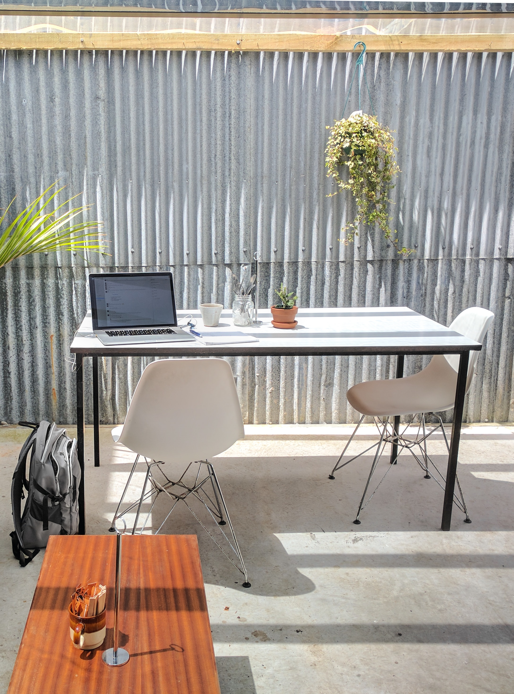

Front-end developer.
Different world build around codes.
A game developer.
every new thing, started from a blank space.

Learning is fun.
It's very beautiful to be able to build.
Previous
Next
Hello, I'm a web developer.
Get to know me, know my drive and what keeps me going, welcome to tour around my page, you will get to know the real me, and i pretty much think i'm a loner.
Making the world a fun place is one of the things i enjoy doing, but everything starts out blank, empty before been acted upon, interesting thing is that i enjoy that planeness that gives birth to something new,
making me enjoy the mystery in black and white color. most innovations happened in life, through the click of keyboards and a blank screen, sometimes exceptions is all you need to push that vibe, a drink might be what does it for you,
or games, or hanging out with friends, or staying all by yourself a lone ranger like me and you get inspired, and also not forgetting love, hate, peace, anger, violence, strife, pleasure, partying and all sorts that can trigger that link between you and a new born innovations or ideas,
and everything will be spontaneous and very beautiful.A birth to a new beginning and a new born..
Learn more
ABOUT

Making the world a fun place is one of the things I enjoy doing, but everything starts out blank, empty before been acted upon, interesting thing is that i enjoy that planeness that gives birth to something new, making me enjoy the mystery in black and white color. most innovations happened in life, through the click of keyboards and a blank screen, sometimes exceptions is all you need to push that vibe, a drink might be what does it for you, or games, or hanging out with friends, or staying all by yourself a lone ranger.
A developer is an individual that builds and create software and applications. He or she writes, debugs and executes the source code of a software application.
A developer is also known as a software developer, computer programmer, programmer, software coder or software engineer.
A developer is the key individual behind all software applications. Generally, developers are well versed in at least one programming language and proficient in the art of structuring and developing software code for software or a program. Depending on job role and type of software developed, a developer may be classified as a software developer, application developer, mobile developer, Web developer, etc.